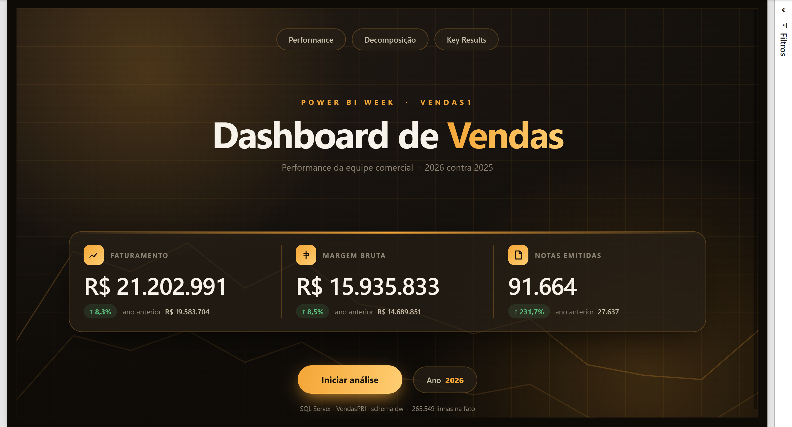
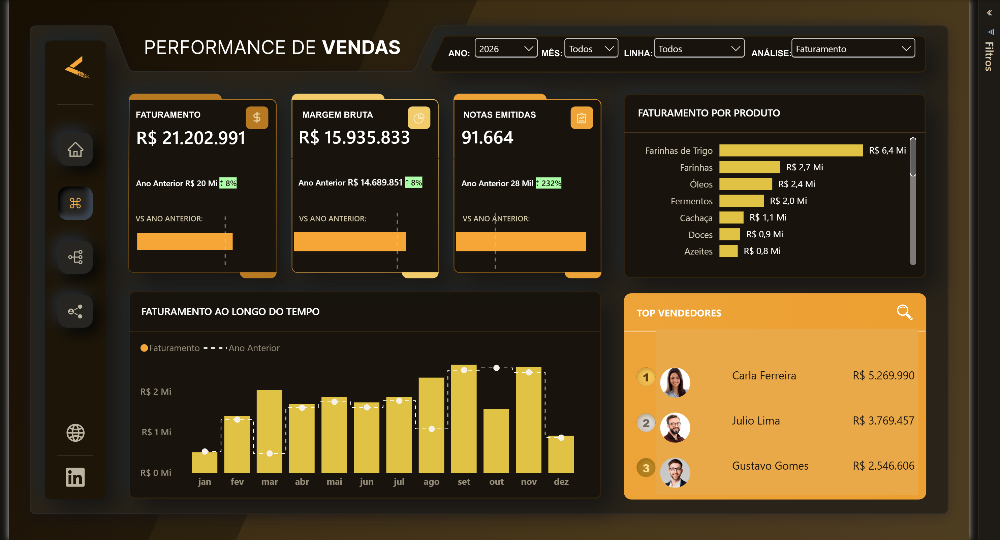
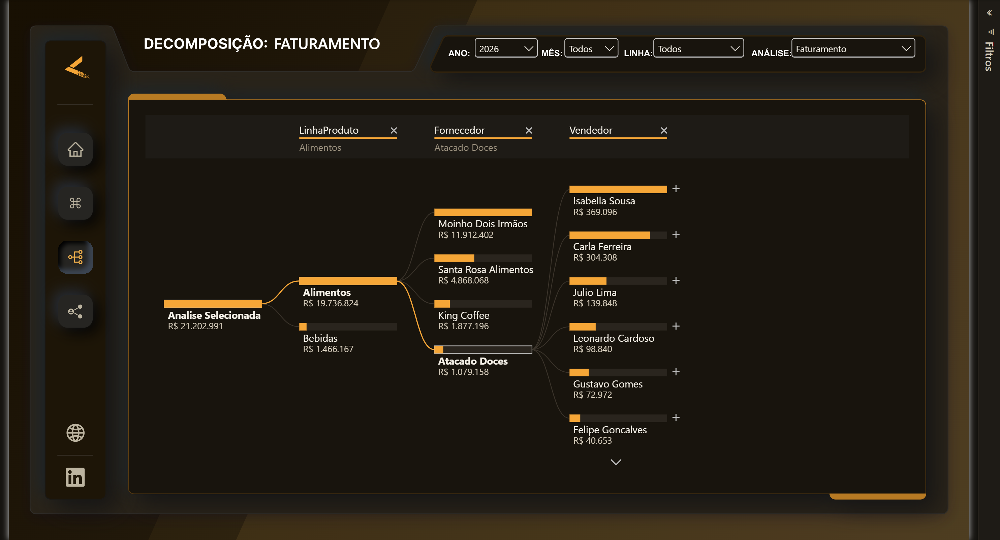
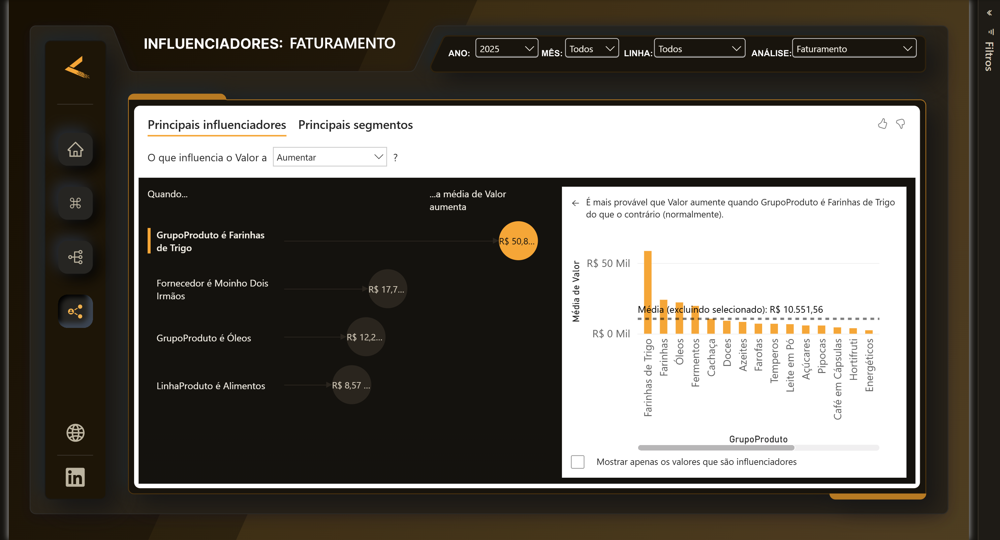

Painel executivo de faturamento, margem bruta e performance da equipe comercial sobre 265 mil linhas de venda — de planilhas de origem a um banco SQL Server modelado em estrela, consumido pelo Power BI.
O Vendas1 responde três perguntas que a diretoria comercial faz toda segunda-feira: quanto vendemos e como isso se compara ao ano anterior, onde a margem está sendo construída ou destruída, e quem na equipe está puxando o resultado. A capa entrega a leitura executiva em 10 segundos; a página de Performance abre o comparativo mês a mês contra o mesmo período do ano passado; a Decomposição permite abrir qualquer número por linha de produto, fornecedor, vendedor e grupo; e Key Results usa os principais influenciadores para apontar o que mais empurra o indicador para cima.
Toda a transformação acontece no banco, não no Power Query. O pipeline parte das
planilhas de origem para um SQL Server em dois esquemas — stg
com os dados crus e dw com o modelo tratado, em estrela: uma fato de vendas
e três dimensões (produto, vendedor e calendário), mais a tabela de metas. Colunas
derivadas como custo e faturamento da venda são materializadas em SQL, com índices e
documentação nas próprias tabelas.
Uma decisão de modelagem vale o registro. A base de fotos de produto trazia itens que
nunca foram vendidos, o que no modelo original obrigava a um filtro cruzado bidirecional
entre a dimensão e a fato — solução que funciona, mas espalha ambiguidade pelo modelo e
cobra caro em performance. Aqui a dimensão de produto é construída a partir do
DISTINCT da própria fato, então o problema simplesmente não existe: todas as
relações são de mão única, do jeito que um esquema estrela deve ser.
O modelo semântico tem 45 medidas DAX organizadas numa tabela dedicada,
separando cálculos-base, comparativos com o ano anterior, acumulados no ano e as medidas
de apoio que alimentam formatação condicional. Os comparativos de período usam
SAMEPERIODLASTYEAR e DATESYTD sobre uma dimensão calendário
marcada como tabela de datas; o cruzamento com metas, que vivem em outra granularidade,
é resolvido com TREATAS em vez de um relacionamento muitos-para-muitos.
A camada visual segue um único arquivo de tema e artes SVG de fundo, o que mantém o espaçamento e a tipografia idênticos entre as quatro páginas sem depender de ajuste manual visual a visual.
Clique em uma imagem para ampliar.



